본 포스트는 서울대학교 컴퓨터공학부 시스템 프로그래밍(System Programming, M1522.000800, Fall 2026) 강의 자료 중 20강 — Concurrent Programming: Threads and Threading Models (총 37장)를 바탕으로, 강의를 처음 듣는 독자도 논리적 흐름을 따라갈 수 있도록 재구성한 것입니다. 동시성(Concurrency) 단원은 Part I(Introduction, Concurrent Processes) · Part II(Threads and Threading Models) · Part III(Races and Synchronization)의 세 강의로 이루어지며, 이 강의는 19강의 동시 프로세스에 이어 두 번째 부분인 스레드를 다룹니다. 원본 슬라이드는 영문으로 작성되어 있고, 본문의 대섹션은 다섯 장의 구분 슬라이드(Multiple Threads → Threading Libraries → Our Webserver – Multithreaded → Parallel Computing with Threads → Module Summary)를 따랐습니다. 개요 슬라이드의 목차(Concurrency Models — Concurrent Processes, Multiple Threads: Pthread API · Running Example with Pthreads · Discussion → Summary)와 견주면 Pthread API가 2장, 예제가 3장에 해당하고, Discussion에 해당하는 스레드 기반 서버의 문제점과 장단점(30–31번 슬라이드)은 3장의 끝에 있으며, 목차에 없는 병렬 계산은 4장입니다. 슬라이드가 “교재”라고 부르는 Bryant & O’Hallaron, Computer Systems: A Programmer’s Perspective (3rd ed.)에서는 12장 Concurrent Programming이 같은 범위를 다룹니다. 강의 자료(.pptx)에 숨김 슬라이드와 발표자 노트는 없습니다. 슬라이드의 코드는 오류 처리와 일부 선언을 생략한 발췌이므로 이 글을 쓰며 macOS(clang)에서 직접 컴파일해 확인했고, 그 과정에서 드러난 함수 원형의 오타(17번 슬라이드), 하이픈 대신 엔 대시로 찍힌 컴파일 옵션(16번 슬라이드), 작은 입력에서 배열 범위를 넘는 작업 분할(34번 슬라이드)을 해당 위치에서 짚었습니다.
한 줄 요약 (TL;DR)
“스레드는 한 프로세스 안에서 코드 · 데이터 · 커널 문맥을 함께 쓰고 레지스터와 스택만 따로 가지는 실행 흐름이어서, 프로세스보다 만들고 바꾸기 싸고 데이터를 나누기 쉽지만, 바로 그 쉬운 공유가 재현하기 어려운 경쟁을 낳습니다.”
프로세스를 프로그램 문맥(레지스터 · 조건 코드 · SP · PC)과 스택으로 된 스레드, 그리고 모든 스레드가 함께 쓰는 코드 · 데이터 · 커널 문맥으로 나누어 보면, 다중 스레드 프로세스는 스레드 몫만 여러 벌인 프로세스이며, 리눅스 커널은 프로세스와 스레드를 구분하지 않고 모두 태스크로 스케줄합니다. Pthreads에서는
pthread_create로 스레드를 만들고pthread_join으로 기다려 수확하며, 메인 스레드가return이나exit으로 끝나면 피어 스레드도 함께 끝납니다. 스레드 기반 echo 서버는 클라이언트마다 스레드를 만들되, 스레드의 기본 상태인 조인 가능(joinable)으로 두고 아무도 기다리지 않으면 자원이 새므로 스레드가 스스로 분리(detach)하고, 연결 디스크립터는malloc한 공간에 담아 넘깁니다. 메인 스레드 스택에 있는client_fd의 주소를 그대로 넘기면 다음accept가 그 값을 덮어쓰는 경쟁이 생기며, 같은 구조의 실험에서 0–99를 하나씩 나누어 읽어야 할 스레드 100개가 멀티코어 서버에서는 0–99 가운데 23가지 값만 읽었습니다. 스레드는 병렬 계산에도 쓰여서, 벡터 덧셈을 구간별로 나누어 스레드마다 부분합을 구한 뒤 합칠 수 있고, OpenMP는#pragma한 줄로 같은 일을 컴파일러에 맡깁니다.
1. 다중 스레드 (Multiple Threads)
구분 슬라이드에는 1.5.4절에서 다시 볼 스레드 풀 그림, 즉 다섯 스레드 T1–T5가 가운데의 공유되는 코드 · 데이터 · 커널 문맥을 함께 가리키는 그림이 실려 있습니다.
19강 3.1절은 서버가 여러 클라이언트를 동시에 처리하도록 동시 흐름(concurrent flow)을 만드는 방법으로 프로세스, 스레드, select()를 쓰는 I/O 다중화의 셋을 꼽았고, 19강 4장이 그 첫 번째인 프로세스를 다루었습니다. 이 장은 두 번째인 스레드(thread)가 무엇인지를, 프로세스를 다른 눈으로 다시 보는 데서부터 정의합니다.
1.1 동시성 서버: 다중 스레드 (Concurrent Servers: Multiple Threads)
- 다중 프로세스 방식과 매우 비슷하지만, 프로세스 대신 스레드를 씁니다.
19강 4.3절의 프로세스 기반 동시성 echo 서버는 클라이언트가 연결할 때마다 fork로 자식 프로세스를 만들어 그 클라이언트를 맡겼습니다. 스레드 기반 서버도 “클라이언트마다 흐름 하나”라는 구조는 같고, 흐름을 만드는 수단만 스레드로 바뀝니다. 그런데 이 한 가지 차이가 흐름들 사이에서 무엇을 함께 쓰고 무엇을 따로 갖는지를 통째로 바꾸므로, 1.2–1.4절은 같은 프로세스를 세 가지 관점으로 다시 그려 봅니다.
1.2 프로세스: 전통적인 관점 (Process: Traditional View)
- 프로세스 = 프로그램 문맥 + 코드, 데이터, 스택
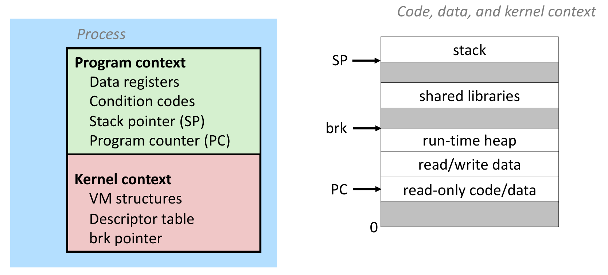
지금까지 다룬 프로세스는 다음 세 가지를 한데 묶은 것이었습니다.
| 구성 요소 | 내용 |
|---|---|
| 프로그램 문맥 (program context) | 데이터 레지스터, 조건 코드(직전 연산의 결과가 0인지, 음수인지 등을 기록하는 플래그), 스택 포인터(SP), 프로그램 카운터(PC). CPU 위에서 실행이 어디까지 진행되었는지를 나타내며, 13강 2장의 문맥 교환(context switch)이 저장하고 되살리는 값입니다 |
| 커널 문맥 (kernel context) | 가상 메모리 구조(페이지 테이블처럼 그 프로세스의 가상 주소를 물리 주소로 옮기는 데 필요한 커널 자료), 디스크립터 테이블(13강 4.4절), 힙의 끝을 가리키는 brk 포인터. 커널이 그 프로세스를 위해 관리하는 자료입니다 |
| 코드, 데이터, 스택 | 주소 공간의 내용: 스택, 공유 라이브러리, 실행 시간 힙, 읽기/쓰기 데이터, 읽기 전용 코드/데이터 |
이 관점에서는 “실행 중인 흐름”에 속하는 것(레지스터와 스택)과 “흐름이 놓인 환경”에 속하는 것(주소 공간의 나머지와 커널 자료)이 한 상자에 섞여 있습니다. 다음 슬라이드는 이 둘을 갈라 놓습니다.
1.3 프로세스: 단일 스레드 관점 (Process: Single Thread View)
- 프로세스 = 메인 스레드 + 코드, 데이터, 커널 문맥
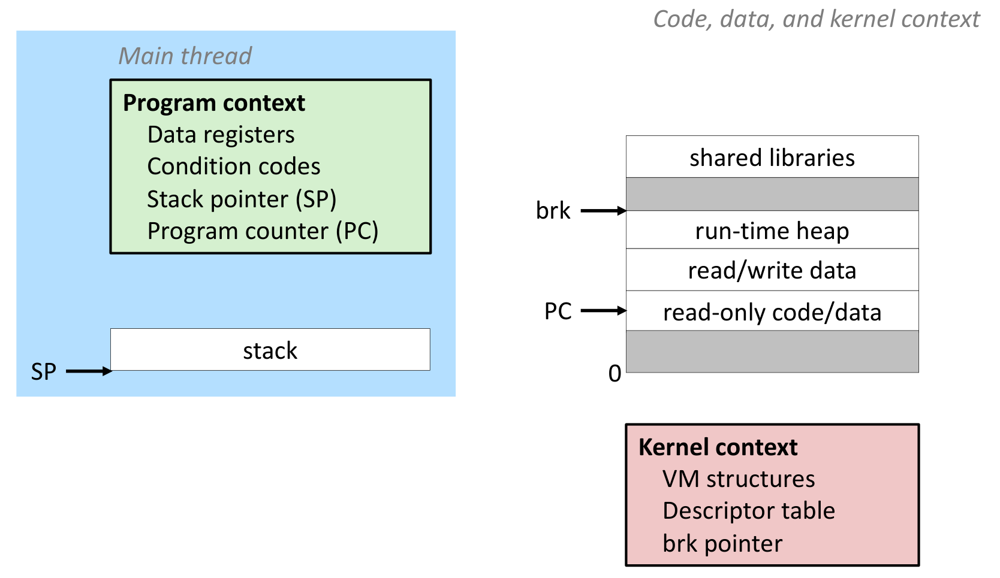
1.2절의 그림과 견주면 달라진 것은 두 가지입니다.
- 스택이 주소 공간 쪽에서 메인 스레드 쪽으로 옮겨 갔습니다. 스택은 호출된 함수들의 지역 변수와 복귀 주소를 담으므로, 레지스터와 마찬가지로 “지금 어떤 함수를 어디까지 실행했는가”라는 실행 흐름의 상태에 속합니다.
- 커널 문맥이 프로세스 상자에서 빠져 코드 · 데이터 쪽으로 옮겨 갔습니다. 디스크립터 테이블이나 가상 메모리 구조는 특정 실행 흐름이 아니라, 흐름이 놓인 환경에 속합니다.
이렇게 나누면 프로세스는 실행 흐름 하나, 곧 메인 스레드(main thread)와 그 흐름이 쓰는 코드 · 데이터 · 커널 문맥의 합입니다. 스레드 하나에 딸린 상태, 즉 프로그램 문맥과 스택을 묶어 흔히 스레드 문맥(thread context)이라고 부릅니다.
1.4 프로세스: 다중 스레드 관점 (Process: Multi-Threaded View)
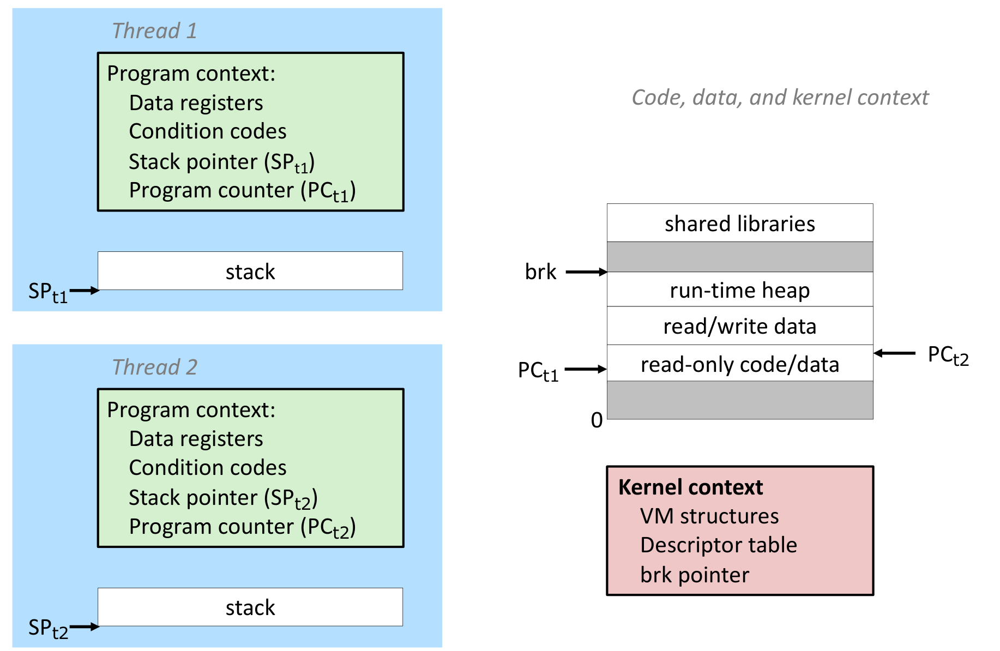
1.3절의 관점을 그대로 넓히면 다중 스레드 프로세스가 됩니다.
- 스레드마다 따로 가지는 것: 프로그램 문맥(데이터 레지스터, 조건 코드, SPt1 · PCt1 또는 SPt2 · PCt2)과 스택
- 모든 스레드가 함께 쓰는 것: 공유 라이브러리, 실행 시간 힙, 읽기/쓰기 데이터, 읽기 전용 코드/데이터, 커널 문맥(가상 메모리 구조, 디스크립터 테이블, brk 포인터)
여기서 두 가지 결과가 바로 나옵니다.
- 공유가 공짜입니다. 전역 변수와 힙의 객체는 모든 스레드가 같은 주소로 봅니다. 19강 4.6절에서 프로세스끼리 데이터를 나누려면 공유 메모리 같은 프로세스 간 통신(IPC)이 필요했던 것과 대조됩니다.
- 스레드는 가볍습니다. 스레드 하나를 더 만들려면 레지스터 한 벌과 스택 하나만 마련하면 되고, 주소 공간이나 디스크립터 테이블을 새로 만들 필요가 없습니다.
- 스레드(thread): 한 프로세스 안에서 실행되는 논리적 제어 흐름 하나.
- 스레드 문맥(thread context): 스레드마다 따로 가지는 상태. 프로그램 문맥(데이터 레지스터, 조건 코드, SP, PC)과 스택.
- 공유 부분: 한 프로세스의 모든 스레드가 함께 쓰는 코드, 데이터(전역 변수와 힙), 커널 문맥(가상 메모리 구조, 디스크립터 테이블, brk 포인터).
- 메인 스레드(main thread): 프로세스가 시작할 때 처음 실행되는 스레드.
그림은 스택을 각 스레드의 상자 안에 그렸지만, 스레드들의 스택도 하나의 가상 주소 공간 안에 자리한 서로 다른 영역일 뿐이며, 한 스레드가 다른 스레드의 스택을 읽고 쓰지 못하게 막는 장치는 없습니다. 다른 스레드의 스택에 있는 변수의 주소만 알면 그 값을 읽고 고칠 수 있습니다. 3.5절의 경쟁이 바로 메인 스레드 스택에 있는 변수를 피어 스레드가 포인터로 읽는 데서 생깁니다.
1.5 스레드 대 프로세스 (Threads vs Processes)
슬라이드 네 장이 같은 제목으로 스레드와 프로세스를 여러 측면에서 비교합니다.
1.5.1 단일 스레드 프로세스와 다중 스레드 프로세스 (Process (single-threaded) vs. multi-threaded)
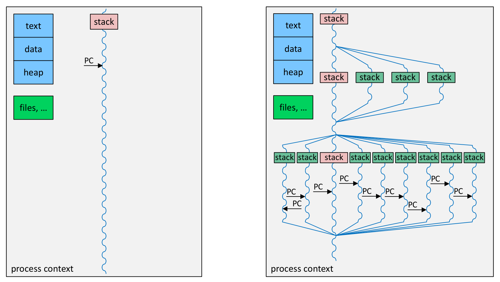
- 흐름이 갈라지는 지점이 스레드를 만드는 순간이고, 다시 합쳐지는 지점이 만든 스레드들이 끝나기를 기다리는 순간입니다. 2장의
pthread_create와pthread_join이 각각 이 두 순간에 해당합니다. - 분홍 스택은 갈라지고 합쳐지는 동안에도 계속 이어지는 메인 스레드의 스택이고, 초록 스택은 메인 스레드가 만든 스레드들의 스택입니다.
1.5.2 프로세스 안의 활동 단위 (A thread is an object of activity within a process)
- 스레드는 프로세스 안의 활동 단위(object of activity)입니다.
- 순차 프로그램: 프로세스 하나에 스레드 하나
- 병렬 프로그램: 프로그램 하나에 스레드 여럿
- 같은 주소 공간과 파일 디스크립터를 공유합니다.
- 프로그램 카운터, 스택, 레지스터는 따로 가집니다.
- 리눅스 커널은 “태스크(task)”를 스케줄합니다.
- 태스크 = 활동 단위. 프로세스일 수도, 스레드일 수도 있습니다.
- (순차) 프로세스와 다중 스레드 프로세스를 구분하지 않습니다.
슬라이드가 말한 “공유”와 “따로”를 POSIX 표준이 정한 목록(man 7 pthreads)으로 조금 더 구체적으로 적으면 다음과 같습니다.
| 프로세스 전체가 공유 | 스레드마다 따로 |
|---|---|
| 전역 메모리(데이터와 힙), 열린 파일 디스크립터, 프로세스 ID와 부모 프로세스 ID, 시그널 처리 방식(signal disposition), 현재 디렉토리, 사용자 · 그룹 ID 등 | 스택(자동 변수), 스레드 ID(pthread_t), 시그널 마스크, errno 변수 등 |
- 시그널 처리 방식이 공유되므로, 어느 스레드가 시그널 핸들러를 등록하든 프로세스 전체에 적용됩니다. 반면
errno는 스레드마다 따로 있어서, 한 스레드의 시스템 호출 실패가 다른 스레드의errno를 덮어쓰지 않습니다. - 리눅스의 Pthreads 구현은 스레드 하나를 커널이 스케줄하는 단위 하나에 대응시키는 1:1 방식입니다(
man 7 pthreads). 한 프로세스의 스레드들은 같은 프로세스 ID(PID)를 나누어 가지면서 각자 고유한 스레드 ID(TID,gettid()가 돌려주는 값)를 가지며, 단일 스레드 프로세스에서는 TID와 PID가 같습니다(man 2 gettid). - 그래서 스케줄러 입장에서는 “단일 스레드 프로세스 10개”와 “스레드 10개짜리 프로세스 하나”가 모두 태스크 10개입니다. 두 경우가 다른 점은 주로 태스크들이 주소 공간과 디스크립터 테이블 같은 자원을 공유하느냐입니다.
1.5.3 닮은 점과 다른 점 (Similarities and Differences)
닮은 점 (Similarities)
- 각자 자기만의 논리적 제어 흐름(logical control flow)을 가집니다.
- 다른 흐름과 동시에 실행될 수 있습니다.
- 커널이 문맥 교환(스케줄)합니다.
다른 점 (Differences)
- 스레드는 코드와 데이터를 공유하지만, 프로세스는 (보통) 공유하지 않습니다.
- 스레드가 프로세스보다 비용이 적게 듭니다.
- 프로세스 제어(생성과 수확)가 스레드 제어보다 비쌉니다.
- 프로세스 사이의 문맥 교환이 스레드 사이의 문맥 교환보다 비쌉니다.
슬라이드의 두 비용 차이는 1.4절의 그림에서 바로 읽을 수 있습니다.
- 생성과 수확:
fork는 부모의 주소 공간을 본뜬 새 주소 공간(페이지 테이블 등)과 디스크립터 테이블 사본을 만들어야 하지만, 스레드는 이미 있는 주소 공간 안에 스택과 레지스터 한 벌만 마련하면 됩니다. 끝난 흐름을 정리할 때도 지울 것이 그만큼 적습니다. - 문맥 교환: 같은 프로세스의 스레드 사이를 오갈 때는 주소 공간이 그대로이므로 페이지 테이블을 바꿀 필요가 없고, TLB 같은 곳에 캐시된 주소 변환도 계속 쓸 수 있습니다. 바꾸는 것은 스택 포인터를 포함한 레지스터 한 벌이며, 스택 포인터가 바뀌면서 쓰는 스택도 바뀝니다.
- “(보통)”이라는 단서: 프로세스도 일부러 공유할 수는 있습니다. 19강 4.6절이 정리했듯
fork한 프로세스끼리도 열린 파일 테이블은 공유하고, 공유 메모리 같은 IPC로 데이터를 나눌 수 있습니다. 다만 스레드처럼 아무 준비 없이 모든 것을 공유하지는 않습니다.
1.5.4 프로세스는 트리, 스레드는 풀 (Processes form a tree hierarchy, Threads form a pool of peers)
- 프로세스는 트리 계층(tree hierarchy)을 이룹니다.
- 스레드는 대등한 동료들의 풀(pool of peers)을 이룹니다.
- 어느 스레드든 다른 어떤 스레드도 없앨(kill) 수 있습니다.
- 어느 스레드든 다른 어떤 스레드가 끝나기를 기다릴 수 있습니다.
- 메인 스레드는 프로세스에서 맨 처음 실행되는 스레드입니다.
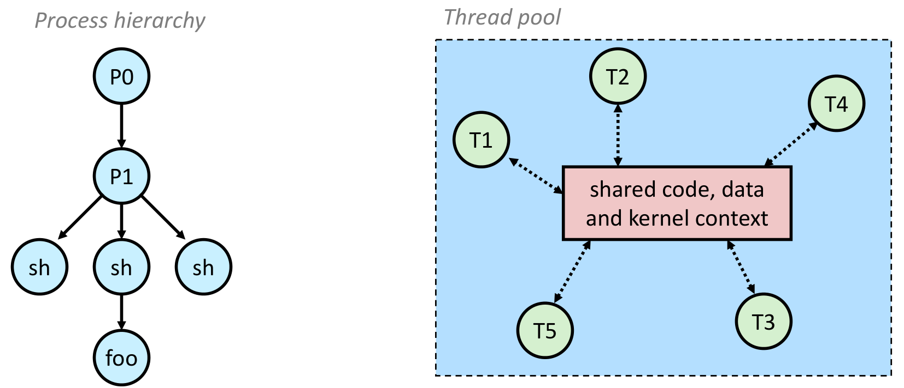
- 프로세스는 부모가
fork로 자식을 만들고, 자식이 끝나면 그 부모만이waitpid로 수확할 수 있습니다(13강 5.4절). - 스레드에는 그런 부모-자식 관계가 없습니다. Pthreads 매뉴얼(
man 3 pthread_join)도 한 프로세스의 모든 스레드는 동료(peer)이므로 어느 스레드든 다른 어느 스레드와도 join할 수 있다고 적고 있습니다. 슬라이드의 “없앤다”는 2.2.1절 표의pthread_cancel에 해당합니다. - 메인 스레드도 다른 스레드들의 부모가 아니라 처음 실행되었을 뿐인 동료입니다. 다만 2.4절에서 보듯 메인 스레드가
main에서 돌아오면 프로세스 전체가 끝난다는 점은 다릅니다. - 여기서 “Thread pool”은 이렇게 대등한 스레드들의 모임을 가리키는 이름표입니다. 스레드를 미리 여러 개 만들어 두고 일감을 나누어 주는 설계 기법도 흔히 스레드 풀이라고 부르지만, 그것과는 다른 뜻입니다.
1.6 스레드 실행 (Thread Execution)
- 단일 코어 프로세서 (Single Core Processor): 시분할(time slicing)로 동시성을 흉내 냅니다.
- 멀티코어 프로세서 (Multi-Core Processor): 진짜 동시 실행이 가능합니다.
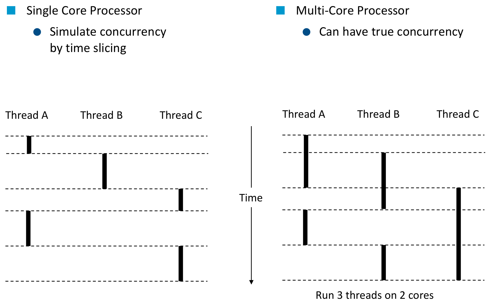
- 단일 코어에서는 어느 순간에도 한 스레드만 실행됩니다. 커널이 짧은 시간 조각마다 실행할 스레드를 바꾸며 번갈아 실행(interleaving)하므로, 사람이 보기에는 셋이 함께 진행되는 것처럼 보일 뿐입니다.
- 멀티코어에서는 코어 수까지의 스레드가 정말로 같은 순간에 실행될 수 있습니다. 슬라이드가 “true concurrency”라고 부른 것은 이런 병렬(parallel) 실행입니다.
- 어느 쪽이든 각 스레드는 1.5.3절의 “논리적 제어 흐름”을 따라 진행하고, 언제 어느 스레드가 실행될지는 커널이 정합니다. 3.7절에서 같은 프로그램이 단일 코어와 멀티코어에서 전혀 다른 모양의 결과를 내는 것도 이 실행 방식의 차이와 관련이 있습니다.
2. 스레드 라이브러리 (Threading Libraries)
구분 슬라이드에는 강의 표지에도 쓰인 그림, 즉 1.5.1절 오른쪽 그림의 아랫부분처럼 메인 흐름이 스택과 PC를 가진 9개의 흐름으로 갈라졌다가 다시 합쳐지는 그림이 실려 있습니다. 이 장에서는 그런 스레드를 실제로 만들고 다루는 API를 봅니다.
2.1 널리 쓰이는 스레드 라이브러리 (Common Threading Libraries)
- POSIX 스레드 (POSIX Threads, Pthreads)
- OpenMP
- OpenCL
슬라이드는 셋 가운데 Pthreads만 굵게 강조했고, 이 강의의 코드도 대부분 Pthreads로 쓰여 있습니다.
| 라이브러리 | 성격 | 이 글에서 |
|---|---|---|
| Pthreads | POSIX 표준이 정한 C 함수 인터페이스. 스레드의 생성 · 종료 · 대기와 동기화를 프로그래머가 함수로 직접 호출합니다 | 2.2절–3장, 4.2절 |
| OpenMP | 루프 같은 코드에 컴파일러 지시문(#pragma omp …)을 붙여 병렬로 실행하라고 표시하면, 컴파일러와 런타임이 스레드를 만들어 일을 나눕니다 |
4.3절 |
| OpenCL | CPU뿐 아니라 GPU 같은 다른 종류의 연산 장치까지 겨냥한 병렬 프로그래밍 표준 | 다루지 않음 |
19강 1.1절이 데이터 병렬성의 도구로 OpenCL과 OpenMP를, 작업 병렬성의 도구로 OpenMP를 꼽았던 것과 이어지는 목록입니다.
2.2 Pthread 관리 API (Pthread Management API)
2.2.1 생성, 종료, 대기 (Thread creation, termination, and wait)
첫 번째 슬라이드의 표를 그대로 옮기면 다음과 같습니다. 슬라이드의 표 왼쪽 칸에 있던 작업 이름은 주석으로 달았고, 원형 끝에 세미콜론을 붙였습니다.
/* Thread creation */
int pthread_create(pthread_t *thread, pthread_attr_t *attr,
void* (*thread_routine)(void *), void *arg);
/* Thread termination */
/* return from thread routine ( exit terminate process ) */
void pthread_exit(void *retval);
int pthread_cancel(pthread_t thread);
/* Wait for thread */
int pthread_join(pthread_t thread, void **retval);
/* Get own TID */
pthread_t pthread_self(void);| 작업 | 함수 | 하는 일 |
|---|---|---|
| 스레드 생성 | pthread_create |
새 스레드를 만들어 thread_routine(arg)를 실행하게 하고, 그 스레드의 ID를 *thread에 적습니다. attr가 NULL이면 기본 속성으로 만듭니다 |
| 스레드 종료 | 스레드 루틴에서 return |
그 스레드만 끝납니다. 돌려준 값은 pthread_exit에 넘긴 값과 똑같이 취급됩니다 |
pthread_exit |
호출한 스레드를 끝내고, retval을 그 스레드를 기다리는 쪽에 넘깁니다 |
|
pthread_cancel |
다른 스레드에 취소(종료)를 요청합니다. 대상 스레드가 실제로 끝나는지, 끝난다면 언제인지는 그 스레드의 취소 설정(cancelability state와 type)에 달려 있습니다 | |
| 스레드 대기 | pthread_join |
thread가 끝날 때까지 기다리고, 그 스레드가 돌려준 값을 *retval에 받습니다. 끝난 스레드의 자원도 이때 회수, 곧 수확됩니다 |
| 자기 ID 얻기 | pthread_self |
호출한 스레드 자신의 ID를 돌려줍니다 |
슬라이드는 표 아래에 <pthread.h>를 포함하고 -lpthread로 컴파일하라고 적고, 3장의 서버를 컴파일하는 명령을 예로 듭니다.
$ gcc -o echoservert echoservert.c -lpthread표에서 짚어 둘 점은 다음과 같습니다.
- 스레드 루틴의 형식:
void *를 하나 받아void *를 하나 돌려주는 함수입니다. 넘길 인자가 여럿이면 구조체에 담아 그 주소를 넘기고(4.2절), 돌려줄 값도void *하나에 담습니다. exit는 프로세스를 끝냅니다. 표의 괄호 속 주석대로, 어느 스레드에서든exit을 부르면 그 스레드만이 아니라 프로세스의 모든 스레드가 끝납니다. 스레드 하나만 끝내려면 스레드 루틴에서 돌아오거나pthread_exit을 부릅니다.- 원형의 단순화: 실제 POSIX 원형은
attr가const pthread_attr_t *이고 포인터 인자들에restrict가 붙는 등 조금 더 깁니다(man 3 pthread_create). 슬라이드는 이런 한정어를 뺐습니다. - 두 가지 스레드 ID: 슬라이드가 TID라고 부른
pthread_self의 반환값pthread_t는 Pthreads 라이브러리가 쓰는 ID로, 1.5.2절의 커널 스레드 ID(gettid())와는 다른 값입니다. 또pthread_t는 정수가 아닌 구조체일 수도 있으므로, 두 ID를 비교할 때는==대신pthread_equal을 씁니다(man 3 pthread_self).
16번 슬라이드의 두 줄 “compile with –lpthread”와 $ gcc -o echoservert echoservert.c –lpthread에서 lpthread 앞의 문자는 하이픈(-, U+002D)이 아니라 엔 대시(–, U+2013)입니다. 같은 줄의 -o는 하이픈이므로 눈으로는 구별하기 어렵습니다. 이대로 복사해 붙이면 컴파일러는 이것을 옵션이 아니라 파일 이름으로 받아들여, 예컨대 clang은 no such file or directory: '–lpthread' 오류를 냅니다. 위의 명령처럼 하이픈으로 -lpthread라고 써야 합니다. 덧붙여 glibc 2.34부터는 Pthreads 함수가 C 라이브러리 안으로 합쳐져 리눅스에서도 이 옵션 없이 링크되고(붙여도 문제는 없습니다), 이 글을 쓰며 확인한 macOS에서도 옵션 없이 링크되었습니다.
2.2.2 동기화 (Mutex and condition thread synchronization)
두 번째 슬라이드의 표는 스레드끼리 보조를 맞추는 동기화 함수들입니다.
| 작업 | 슬라이드에 적힌 함수 (표기 그대로) |
|---|---|
| 뮤텍스 동기화 (Mutex thread synchronization) | pthread_mutex_init, phtread_mutex_[try/un]lock, pthread_mutex_destroy |
| 조건 변수 동기화 (Condition thread synchronization) | pthread_cond_init, phtread_cond_[timed]wait, pthread_cond_destroy |
[try/un]lock은pthread_mutex_lock·pthread_mutex_trylock·pthread_mutex_unlock세 함수를,[timed]wait은pthread_cond_wait·pthread_cond_timedwait두 함수를 한 줄로 줄여 적은 표기입니다(phtread는 오타로, 아래에서 다룹니다).- 뮤텍스(mutex)는 상호 배제(mutual exclusion)를 위한 잠금으로, 한 번에 한 스레드만 잠글 수 있습니다.
trylock은 이미 잠겨 있으면 기다리지 않고 곧바로 실패를 돌려줍니다. - 조건 변수(condition variable)는 어떤 조건이 참이 될 때까지 스레드를 재워 두는 장치로, 뮤텍스와 함께 씁니다.
wait은 쥐고 있던 뮤텍스를 놓으면서 잠들었다가 깨어날 때 다시 쥐고,timedwait은abstime이 가리키는 시각까지만 기다립니다. - 이 함수들은 여러 스레드가 공유 데이터를 고칠 때 생기는 경쟁을 막는 도구입니다. 다만 단원의 Part III인 21강(Races and Synchronization)은 같은 문제를 세마포어로 풀고, Pthreads의 뮤텍스와 조건 변수는 이 과목의 범위 밖(out of our scope)이라고만 언급합니다.
- 슬라이드는 이 밖에도 약 60개의 함수가 있으며
man 7 pthreads에서 개요를 볼 수 있다고 덧붙입니다.
슬라이드의 원형에는 세 종류의 오타가 있습니다. 함수 이름의 phtread(두 곳)는 pthread이고, 두 init 함수의 속성 인자는 값(pthread_mutexattr_t attr, pthread_condattr_t attr)이 아니라 const 포인터이며(보통 NULL을 넘깁니다), phtread_cond_[timed]wait의 괄호는 첫 인자 뒤에서 닫히는 것이 아니라 mutex(와 abstime)까지를 감쌉니다. POSIX가 정한 원형은 다음과 같습니다.
int pthread_mutex_init(pthread_mutex_t *restrict mutex,
const pthread_mutexattr_t *restrict attr);
int pthread_mutex_lock(pthread_mutex_t *mutex);
int pthread_mutex_trylock(pthread_mutex_t *mutex);
int pthread_mutex_unlock(pthread_mutex_t *mutex);
int pthread_mutex_destroy(pthread_mutex_t *mutex);
int pthread_cond_init(pthread_cond_t *restrict cond,
const pthread_condattr_t *restrict attr);
int pthread_cond_wait(pthread_cond_t *restrict cond,
pthread_mutex_t *restrict mutex);
int pthread_cond_timedwait(pthread_cond_t *restrict cond,
pthread_mutex_t *restrict mutex,
const struct timespec *restrict abstime);
int pthread_cond_destroy(pthread_cond_t *cond);2.3 Pthreads “hello, world” 프로그램 (The Pthreads “hello, world” Program)
가장 작은 Pthreads 프로그램입니다. 메인 스레드가 피어 스레드 하나를 만들고, 그 스레드가 끝나기를 기다린 뒤 종료합니다.
/*
* hello.c - Pthreads "hello, world" program
*/
#include <pthread.h>
/* 슬라이드에 없는 두 줄: printf와 exit의 선언 */
#include <stdio.h>
#include <stdlib.h>
void *thread(void *vargp);
int main() {
pthread_t tid;
pthread_create(&tid, NULL, thread, NULL);
pthread_join(tid, NULL);
exit(0);
}
// thread routine
void* thread(void *vargp) {
printf("Hello, thread!\n");
return NULL;
}슬라이드는 오른쪽의 설명 상자 네 개를 화살표로 코드에 이어 각 인자의 역할을 짚습니다.
| 설명 상자 | 가리키는 곳 | 뜻 |
|---|---|---|
| Thread attributes (usually NULL) | pthread_create의 둘째 인자 NULL |
스레드 속성. 보통 NULL을 넘겨 기본 속성을 씁니다 |
| Thread routine (“main” of thread) | 셋째 인자 thread |
스레드 루틴. 새 스레드에게는 main 함수와 같은 시작점입니다 |
| Thread arguments (void *p) | 넷째 인자 NULL |
스레드 루틴에 넘길 인자(void * 하나). 이 예에서는 넘길 것이 없습니다 |
| return value (void **p) | pthread_join의 둘째 인자 NULL |
스레드 루틴이 돌려준 값을 받을 곳. 이 예에서는 받지 않습니다 |
- 메인 스레드는
pthread_create로 스레드 루틴thread를 실행할 피어 스레드를 만들고, 곧바로pthread_join으로 그 스레드가 끝나기를 기다린 다음exit(0)으로 끝납니다. 피어 스레드는Hello, thread!를 출력하고NULL을 돌려주며 끝납니다. - 슬라이드의 코드는
<pthread.h>만 포함하므로printf와exit의 선언이 없습니다. C99부터는 선언되지 않은 함수를 부를 수 없고, 이 글을 쓰며 써 본 clang은 이를 경고가 아니라 오류(call to undeclared library function 'exit')로 처리했습니다. 위 코드는 그래서<stdio.h>와<stdlib.h>두 줄을 더했고, 이렇게 고친 프로그램은Hello, thread!한 줄을 출력합니다.
슬라이드의 빨간 상자는 “여기서는 오류 검사를 생략했지만, 실제 코드에서는 반드시 해야 한다”고 경고합니다. 이때 Pthreads 함수의 오류 검사는 시스템 호출과 방식이 다르다는 점에 주의해야 합니다. 대부분의 Pthreads 함수는 성공하면 0을, 실패하면 오류 번호를 반환값으로 돌려주고 errno는 설정하지 않습니다(man 7 pthreads). 따라서 -1과 errno를 확인하는 대신 반환값 자체를 검사해야 하며, 예를 들어 자원이 모자라거나 스레드 수 한도에 걸려 스레드를 만들지 못한 pthread_create는 EAGAIN을 돌려줍니다(man 3 pthread_create).
2.4 스레드 “hello, world”의 실행 (Execution of Threaded “hello, world”)
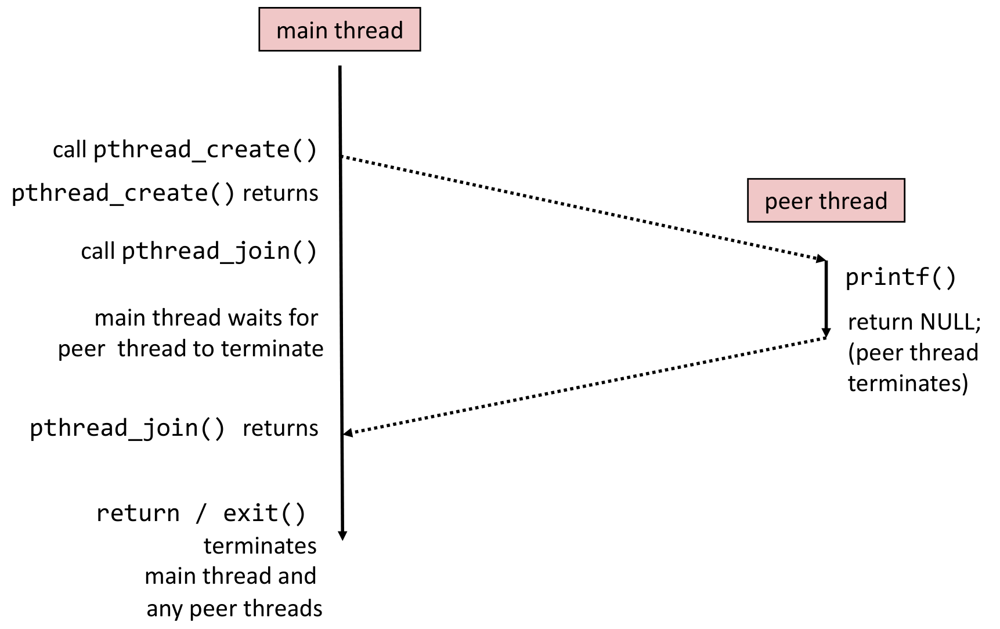
call pthread_create()(pthread_create 호출) 지점을 떠난 점선 화살표가 오른쪽으로 내려가 피어 스레드의 시작점에 닿으며, 메인 스레드 쪽에는 곧이어 pthread_create() returns(pthread_create 반환)가 적혀 있습니다. 메인 스레드가 call pthread_join()(pthread_join 호출) 뒤 “main thread waits for peer thread to terminate”(메인 스레드가 피어 스레드의 종료를 기다림) 상태에 있는 동안, 피어 스레드는 printf()를 실행하고 “return NULL; (peer thread terminates)”로 끝납니다. 피어 스레드의 끝에서 왼쪽으로 돌아오는 점선 화살표가 그 순간 메인 스레드의 pthread_join() returns(pthread_join 반환)가 일어난다는 뜻이며, 마지막의 return / exit()는 “terminates main thread and any peer threads”, 곧 메인 스레드와 남아 있는 모든 피어 스레드를 끝냅니다. 이 마지막 줄 때문에, pthread_join이 없으면 메인 스레드가 먼저 끝나면서 피어 스레드의 출력이 사라질 수 있다는 것이 이 그림의 숨은 요점입니다.| 순서 | 메인 스레드 | 피어 스레드 |
|---|---|---|
| ① | pthread_create()를 호출해 피어 스레드를 만들고, 곧바로 돌아옴 |
시작 |
| ② | pthread_join()을 호출하고, 피어 스레드가 끝나기를 기다림 |
printf() 실행 |
| ③ | (기다리는 중) | return NULL;로 끝남 |
| ④ | pthread_join()이 돌아옴 |
— |
| ⑤ | return 또는 exit(): 메인 스레드와 남은 피어 스레드를 모두 끝냄 |
— |
- 피어 스레드(peer thread): 메인 스레드가 만든 스레드를 슬라이드는 피어 스레드라고 부릅니다. 1.5.4절에서 보았듯 둘은 부모와 자식이 아니라 동료이기 때문입니다.
pthread_join이 필요한 이유: ⑤의return이나exit()는 피어 스레드까지 모두 끝냅니다. 매뉴얼(man 3 pthread_create)도 어느 스레드든exit을 부르거나 메인 스레드가main에서 돌아오면 프로세스의 모든 스레드가 끝난다고 적고 있습니다. 그래서pthread_join없이 메인 스레드가 바로exit(0)에 이르면, 피어 스레드가printf를 실행하기도 전에 프로세스가 끝나Hello, thread!가 찍히지 않을 수 있습니다.- 메인 스레드만 끝내고 싶다면: 메인 스레드가
exit대신pthread_exit을 부르면 메인 스레드만 끝나고 나머지 스레드는 계속 실행됩니다. 마지막 스레드가 끝나는 순간 프로세스가 끝납니다(man 3 pthread_exit). - 그림은 실행 순서의 한 예입니다: 그림은 피어 스레드가 메인 스레드의
pthread_join호출 무렵에 시작하는 것으로 그렸지만,pthread_create가 돌아온 뒤 두 스레드 가운데 어느 쪽이 먼저 실행될지는 스케줄러가 정하며 정해져 있지 않습니다. 어떤 순서로 실행되든pthread_join이 있으므로 출력은 항상 찍힙니다.
3. 우리의 웹 서버: 다중 스레드 버전 (Our Webserver – Multithreaded)
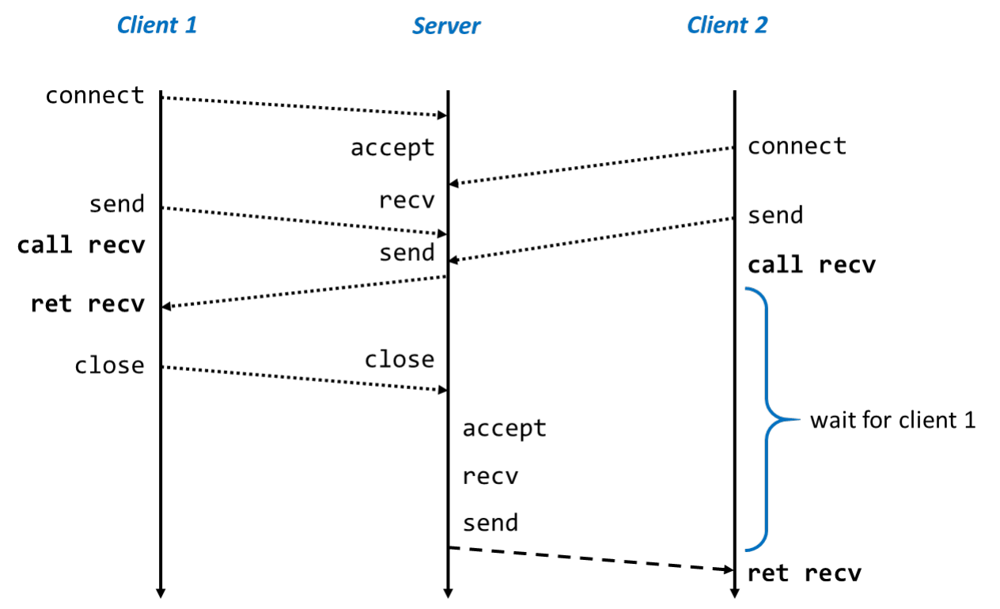
accept하고 recv · send로 echo를 처리하는 동안, Client 2도 connect와 send를 마치고 굵은 글씨의 call recv로 응답을 기다리기 시작합니다. 그러나 서버는 Client 1이 close하고 서버도 그 연결을 close할 때까지 Client 2를 상대하지 않으므로, 오른쪽의 파란 중괄호 wait for client 1(클라이언트 1을 기다림) 동안 Client 2의 recv는 돌아오지 못합니다. 서버가 그제야 두 번째 accept · recv · send를 실행하면 맨 아래의 파선 화살표를 따라 응답이 도착하고 Client 2의 ret recv가 돌아옵니다. Client 2의 connect와 send가 서버의 두 번째 accept보다 먼저 끝날 수 있는 것은 연결 수립과 데이터 수신을 커널이 대신 처리해 두기 때문이며, 이 장의 다중 스레드 서버는 바로 이 기다림을 없애려는 것입니다.구분 슬라이드의 그림이 상기시키듯, 반복 서버는 한 번에 한 클라이언트만 처리하므로 다른 클라이언트는 앞 클라이언트가 끝날 때까지 기다려야 합니다. 이 장은 19강의 echo 서버를 스레드로 바꾸어 이 문제를 풉니다. 슬라이드는 이를 “Our Webserver”라고 부르지만, 코드는 받은 것을 그대로 돌려주는 echo 서버입니다.
3.1 다시 보기: 반복 echo 서버 (Review: Iterative Echo Server)
19강 4.2절에서 본 반복 서버(echoserveri.c)의 run_server 함수입니다.
/// @brief main server routine accepting new connections.
/// Calls run_instance() for every client and blocks until the client exits.
/// @param listen_fd listening socket
void run_server(int listen_fd)
{
while (1) {
int client_fd;
struct sockaddr client;
socklen_t clientlen = sizeof(client);
client_fd = accept(listen_fd, &client, &clientlen);
if (client_fd > 0) {
printf(" connection from "); dump_sockaddr(&client); printf("\n");
run_instance(client_fd);
close(client_fd);
} else {
// print error message and abort on any error
perror("accept");
break;
}
}
}슬라이드의 설명 상자는 굵게 강조한 두 줄이 하는 일을 적어 둡니다.
accept: 연결 요청을 받습니다(Accept connection request).run_instance: 클라이언트가 끝낼 때까지 echo 요청을 처리합니다(Handle echo requests until client terminates).
run_instance는 클라이언트가 연결을 끝내야 돌아오므로, 그동안 루프는 다음 accept에 이르지 못합니다. 위 그림의 “wait for client 1”이 이 코드에서 나옵니다.
3.2 다시 보기: 프로세스 기반 동시성 echo 서버 (Review: Process-Based Concurrent Echo Server)
19강 4.3절의 프로세스 기반 서버(echoserverp.c)로, 연결 디스크립터를 담는 변수의 이름이 cfd에서 client_fd로 바뀐 점 등을 빼면 같은 일을 하는 코드입니다. 주석에 남은 cfd는 그 흔적으로 보입니다. …는 슬라이드가 생략한 부분입니다.
/// @brief main server routine accepting new connections. Forks a new
/// instance for every client and calls run_instance() on it.
/// @param listen_fd listening socket
void run_server(int listen_fd)
{
// register signal handler
if (signal(SIGCHLD, reaper) == SIG_ERR) { … }
while (1) {
…
client_fd = accept(listen_fd, &client, &clientlen);
if (client_fd > 0) {
printf(" connection from "); dump_sockaddr(&client); printf("\n");
if (fork() == 0) {
// close listening socket in client & set sock_fd to cfd for close at exit
close(listen_fd);
sock_fd = client_fd;
run_instance(client_fd);
exit(EXIT_SUCCESS);
}
close(client_fd);
} else { … }
}
}슬라이드의 설명 상자는 이 방식의 성격을 두 줄로 요약합니다.
- 클라이언트마다 별도의 프로세스를
fork합니다(Fork separate process for each client). - 서로 다른 클라이언트 처리기 사이에 아무런 통신도 허용하지 않습니다(Does not allow any communication between different client handlers).
19강 4.3–4.5절에서 본 대로, 부모는 SIGCHLD 핸들러 reaper로 끝난 자식을 수확하고, fork 뒤에는 부모가 연결 디스크립터의, 자식이 듣기 디스크립터의 자기 사본을 닫습니다. 주석에 따르면 자식은 끝날 때 소켓을 닫을 수 있도록, 전역 변수로 보이는 sock_fd에 연결 디스크립터를 넣어 둡니다(선언과 그 처리 코드는 슬라이드에 없습니다). 각 자식은 부모의 메모리를 복사한 자기만의 주소 공간에서 돌기 때문에, 처리기끼리는 예컨대 “지금까지 처리한 클라이언트 수” 같은 값조차 IPC 없이는 나눌 수 없습니다.
3.3 스레드 기반 동시성 echo 서버 (Thread-Based Concurrent Echo Server)
3.3.1 메인 스레드의 run_server
스레드 기반 서버(echoservert.c)에서 연결을 받는 쪽입니다.
/// @brief main server routine accepting new connections. Creates a new
/// thread for every client and calls run_thread() on it.
/// @param listen_fd listening socket
void run_server(int listen_fd)
{
while (1) {
int *client_fdp = malloc(sizeof(int));
struct sockaddr client;
socklen_t clientlen = sizeof(client);
*client_fdp = accept(listen_fd, &client, &clientlen);
if (*client_fdp > 0) {
printf(" connection from "); dump_sockaddr(&client); printf("\n");
pthread_t tid;
pthread_create(&tid, NULL, run_thread, client_fdp);
} else {
// print error message and abort on any error
perror("accept");
break;
}
}
}슬라이드의 설명 상자는 두 가지를 짚습니다.
- 클라이언트마다 별도의 스레드를 만듭니다(Spawn separate thread for each client).
- “(눈에 보이는) free 없이 malloc만 있다”는 점에 주목하세요(Note the “malloc without (visible) free”).
3.2절과 견주어 달라진 곳은 다음과 같습니다.
fork대신pthread_create(&tid, NULL, run_thread, client_fdp)로 클라이언트마다 스레드를 만듭니다. 스레드 루틴은run_thread이고, 인자는 연결 디스크립터를 담은 정수의 주소입니다.- 반복마다
malloc(sizeof(int))로 정수 하나 크기의 공간을 새로 할당해accept의 결과를 그 안에 받습니다. 왜 지역 변수가 아니라 힙을 쓰는지는 3.5절에서 다룹니다. SIGCHLD핸들러가 없습니다. 수확할 자식 프로세스가 없기 때문입니다.- 메인 스레드는
client_fd를 닫지 않습니다. 3.2절의 부모는fork직후 자기 사본을 닫았지만, 스레드들은 디스크립터 테이블을 하나만 공유하므로 여기에는 “메인 스레드의 사본”이 따로 없습니다. 메인 스레드가 닫으면 피어 스레드가 쓰고 있는 바로 그 디스크립터가 닫혀 버립니다.
3.3.2 피어 스레드의 run_thread
/// @brief main thread routine
/// @param vargp pointer to socket fd
void* run_thread(void *vargp)
{
// get client_fd and free memory
int client_fd = *((int*)vargp);
free(vargp);
// detach ("self-reaping")
pthread_detach(pthread_self());
// run receiver-sender loop
run_instance(client_fd);
// close socket & return
close(client_fd);
return NULL;
}주석의 “main thread routine”은 메인 스레드가 아니라 2.3절의 “스레드의 main”처럼 스레드의 주된 루틴이라는 뜻입니다. 슬라이드 오른쪽의 설명은 다음과 같습니다.
- 스레드를 “분리(detached)” 모드로 실행합니다.
- 다른 스레드와 독립적으로 실행됩니다.
- 스레드가 끝나면 자동으로 수확됩니다.
client_fd를 담으려고 할당한 공간을 해제합니다.- 왜 malloc/free를 쓸까요?
- 뒤에서 설명합니다.
코드는 네 단계로 이루어집니다.
| 단계 | 코드 | 하는 일 |
|---|---|---|
| ① | client_fd = *((int*)vargp); free(vargp); |
넘겨받은 공간에서 연결 디스크립터를 지역 변수로 복사하고, 그 공간을 곧바로 해제합니다. 3.3.1절의 “보이지 않는 free”가 여기 있습니다 |
| ② | pthread_detach(pthread_self()) |
자기 자신을 분리합니다. 주석의 “self-reaping”(스스로 수확)대로, 끝나면 아무도 join하지 않아도 자원이 회수됩니다(3.8절) |
| ③ | run_instance(client_fd) |
클라이언트가 끝낼 때까지 받고 돌려보내는 echo 루프를 실행합니다 |
| ④ | close(client_fd); return NULL; |
연결을 닫고 스레드를 끝냅니다 |
두 서버가 각자 책임지는 일을 나란히 놓으면 다음과 같습니다.
| 할 일 | 프로세스 기반 (3.2절) | 스레드 기반 (3.3절) |
|---|---|---|
| 클라이언트마다 흐름 만들기 | fork() |
pthread_create() |
| 연결 디스크립터 넘기기 | fork가 디스크립터 테이블째 복사하므로 자식도 같은 번호를 씁니다 |
malloc한 공간에 담아 그 주소를 스레드 인자로 넘깁니다 |
| 끝난 흐름 수확 | 부모의 SIGCHLD 핸들러가 waitpid로 |
스레드가 스스로 분리해, 끝나면 자동으로 |
| 연결 디스크립터 닫기 | 부모는 fork 직후 자기 사본을, 자식은 끝날 때 자기 사본을 |
피어 스레드만, 다 쓴 뒤에 |
| 듣기 디스크립터 | 자식이 자기 사본을 닫습니다 | 아무도 닫지 않습니다. 메인 스레드가 계속 씁니다 |
3.4 스레드 실행 모델 (Threaded Execution Model)
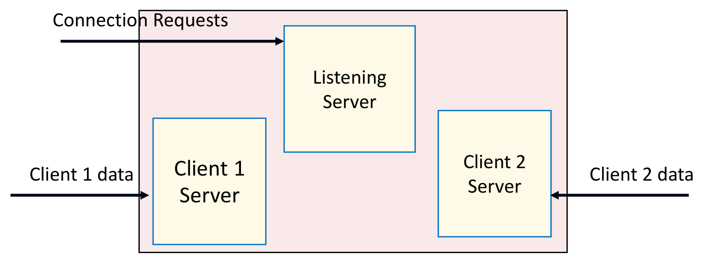
- 하나의 프로세스 안에 여러 스레드가 있습니다.
- 스레드들은 일부 상태를 공유합니다.
- 파일 디스크립터
19강 4.4절의 프로세스 실행 모델과 견주면 차이가 분명합니다.
| 프로세스 실행 모델 (19강 4.4절) | 스레드 실행 모델 | |
|---|---|---|
| 클라이언트를 맡는 단위 | 클라이언트마다 독립된 프로세스 | 한 프로세스 안의 스레드 |
| 흐름 사이의 공유 상태 | 없음(19강 슬라이드의 표현). 부모와 자식이 listen_fd와 client_fd의 사본을 각자 가지며, 두 사본이 같은 열린 파일 테이블 항목을 가리킬 뿐입니다 |
있음. 디스크립터 테이블과 주소 공간 전체를 공유합니다 |
슬라이드가 공유 상태로 파일 디스크립터만 꼽은 것은, 3.3절에서 본 서버 코드의 책임(누가 무엇을 닫는가)이 바로 이 공유와 직결되기 때문으로 보입니다. 1.4절에서 보았듯 실제로는 전역 변수와 힙도 모두 공유되며, 다음 절의 문제는 그 공유에서 나옵니다.
3.5 malloc/free는 왜 필요할까 (Why the Trouble with Malloc/Free?)
3.5.1 더 간단해 보이는 방법 (This is simpler)
malloc과 free 없이, 지역 변수 client_fd의 주소를 그대로 넘기면 더 간단해 보입니다.
void run_server(int listen_fd)
{
while (1) {
int client_fd = accept(listen_fd, &client, &clientlen);
…
pthread_create(&tid, NULL, run_thread, (void*)&client_fd);
}
}
void* run_thread(void *vargp)
{
int client_fd = *((int*)vargp);
…
}3.5.2 간단하지만 틀렸습니다 (Simple, but wrong!)
슬라이드는 위 코드의 세 곳, 즉 int client_fd 선언, (void*)&client_fd 인자, *((int*)vargp) 읽기를 빨갛게 표시하고 무엇이 잘못되는지를 그림으로 보여 줍니다.
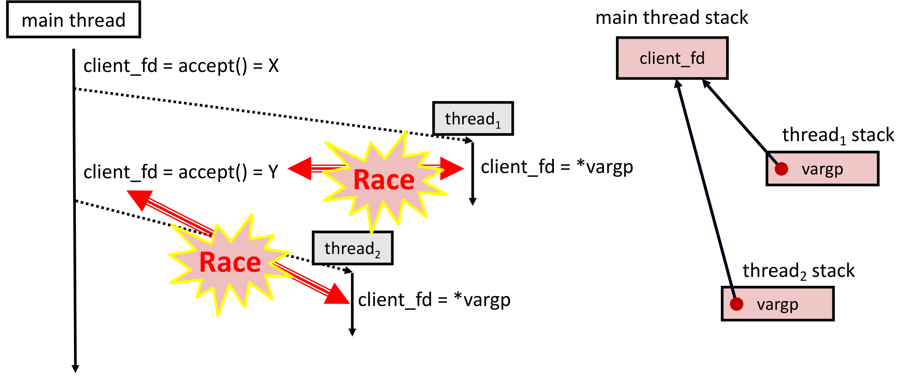
client_fd = accept() = X로 첫 연결을 받은 뒤 점선 화살표를 따라 thread1을 만들고, 이어서 client_fd = accept() = Y로 두 번째 연결을 받아 thread2를 만듭니다. 각 피어 스레드는 시작하자마자 client_fd = *vargp로 넘겨받은 주소에서 값을 읽습니다. 빨간 양방향 화살표와 폭발 모양의 Race(경쟁) 표시 두 개 가운데 첫째는 thread1의 읽기와 메인 스레드의 두 번째 accept가 Y를 쓰는 일 사이에, 둘째는 thread2의 읽기와 메인 스레드 사이에 순서가 정해져 있지 않음을 가리킵니다. 둘째 화살표의 위쪽 끝은 client_fd = accept() = Y 줄 바로 아래를 가리키므로 메인 스레드가 다음 반복에서 같은 client_fd = accept()를 다시 실행하는 일과의 경쟁으로 읽을 수 있는데, 그다음 accept 자체는 그림에 그려져 있지 않습니다. 오른쪽 그림은 그 까닭으로, main thread stack(메인 스레드 스택)에 있는 변수 client_fd 하나를 thread1 stack과 thread2 stack의 vargp가 함께 가리킵니다. 빨간 점이 포인터 변수, 검은 화살표가 그 포인터가 가리키는 곳입니다. thread1이 읽기 전에 메인 스레드가 Y를 써 버리면 thread1도 X가 아닌 Y를 읽게 된다는 것이 이 그림의 요점입니다.일이 꼬이는 순서를 따라가 보겠습니다.
- 메인 스레드가 연결 X를 받아 스택의
client_fd에 X를 쓰고, thread1을 만들면서&client_fd를 넘깁니다. pthread_create가 돌아왔다고 해서 thread1이 이미 값을 읽었다는 보장은 없습니다. thread1이*vargp를 읽기 전에 메인 스레드가 루프를 돌아 다음 연결 Y를 받으면, 같은client_fd자리에 Y가 쓰입니다.- 그러면 thread1은 X가 아니라 Y를 읽습니다. thread2도 제때 읽는다면 Y를 읽으므로 두 스레드가 같은 연결 Y를 처리하고, 연결 X는 아무도 처리하지 않습니다. X의 클라이언트는 응답 없이 기다리고, X의 디스크립터는 닫히지도 않습니다.
- 게다가 두 스레드가 모두 Y를 닫게 되는데, 닫힌 번호는 다음에 만들어지는 디스크립터에 다시 쓰일 수 있으므로, 나중에 닫는 스레드가 엉뚱한 새 연결을 닫아 버릴 수도 있습니다.
- thread2와 메인 스레드 사이에도 똑같은 경쟁이 되풀이됩니다. 메인 스레드가 다음 연결을 받아 같은 자리에 쓰기 전에 thread2가 읽는다는 보장이 없기 때문이며, 그림의 두 번째 Race가 이것입니다.
오른쪽 그림이 말하는 근본 원인은 모든 피어 스레드의 vargp가 메인 스레드 스택의 같은 변수 하나를 가리킨다는 것입니다. 1.4절의 팁에서 보았듯 다른 스레드의 스택도 포인터만 있으면 얼마든지 읽을 수 있으므로, 이 코드는 컴파일도 되고 대개는 그럴듯하게 돌아갑니다. C 언어의 규칙으로 엄밀히 말하면, 루프 본문 안에서 선언된 client_fd는 반복이 끝날 때마다 수명이 끝나므로 그 뒤에 포인터로 읽는 것부터가 정의되지 않은 동작입니다. 실제 구현에서는 반복마다 같은 스택 자리를 다시 쓰기 때문에, 그림처럼 다음 accept의 결과가 그 자리를 덮어쓰는 모습으로 나타납니다.
3.3절의 malloc은 이 문제를 이렇게 풉니다.
- 연결마다 새 공간을 할당하므로 스레드마다 자기만의 칸을 받습니다. 메인 스레드는 그 칸에 값을 쓴 뒤 다시는 건드리지 않고, 다음 반복에서는 또 다른 칸을 할당하므로, 피어 스레드가 언제 읽든 자기 연결의 번호를 읽습니다.
- 해제는 다 읽은 피어 스레드가 합니다. 메인 스레드가
pthread_create직후에 해제하면, 피어 스레드가 읽기 전에 그 공간이 다음malloc에 다시 쓰일 수 있어 같은 종류의 경쟁이 되살아납니다. 3.3.1절에free가 보이지 않았던 것은 이 때문입니다.
pthread_create의 마지막 인자로 넘긴 주소는 새 스레드가 나중에, 언제인지 모르는 시점에 읽습니다. 그 주소가 메인 스레드가 계속 고쳐 쓰는 변수(여기서는 반복마다 accept의 결과를 받는 client_fd)를 가리키면, 읽는 순간의 값이 넘길 때의 값과 같다는 보장이 없습니다. 스레드마다 따로 할당한 공간(3.3절의 malloc)이나 스레드마다 다른 배열 원소(4.2절의 &tparam[t])처럼, 넘긴 뒤에는 다른 스레드가 고쳐 쓰지 않고, 새 스레드가 다 읽기 전에 해제되거나 수명이 끝나지도 않는 공간을 넘겨야 합니다.
3.6 이 경쟁은 실제로 일어날까 (Does this race occur?)
경쟁은 이론상으로만 가능한 것일까요? 슬라이드는 3.5절과 같은 구조의 실험으로 이를 확인합니다. 메인 스레드는 루프 변수 i의 주소를 넘기며 스레드 100개를 만들고, 각 스레드는 그 주소에서 읽은 값을 그대로 돌려줍니다.
/* Main */
int i;
for (i = 0; i < 100; i++) {
pthread_create(&tid, NULL,
thread, &i);
}/* Thread */
void *thread(void *vargp)
{
int i = *((int *)vargp);
return (void*)i;
}경쟁 실험 (Race Test)
- 경쟁이 일어나지 않으면, 각 스레드는 서로 다른
i값을 돌려줍니다. - 따라서 돌려받은 값들의 집합은 0부터 99까지의 값을 하나씩 담게 됩니다.
슬라이드 아래의 막대그래프가 이 기대를 그린 것으로, 가로축의 0–99 모든 값에서 막대의 높이가 1입니다. 3.7절 그림의 맨 위 그래프와 같은 모양입니다.
코드에 관해 두 가지를 덧붙입니다.
- 슬라이드의 코드는 돌려준 값을 모으는 부분을 생략했습니다. 스레드가 돌려준 값은 2.2.1절의
pthread_join이 둘째 인자로 받아 오며, 실제로 100개를 모두 모으려면tid를 하나만 두고 덮어쓰는 대신 배열로 두어야 합니다. return (void*)i;는int를 포인터로 바꾸어 돌려주는 변환입니다. 64비트 환경에서는int(4바이트)가 포인터(8바이트)보다 작아 컴파일러가 경고합니다(clang:cast to 'void *' from smaller integer type 'int'). 정수를 포인터에 실어 주고받을 때는<stdint.h>의intptr_t를 거쳐(void *)(intptr_t)i처럼 쓰는 것이 관례입니다.
3.7 실험 결과 (Experimental Results)
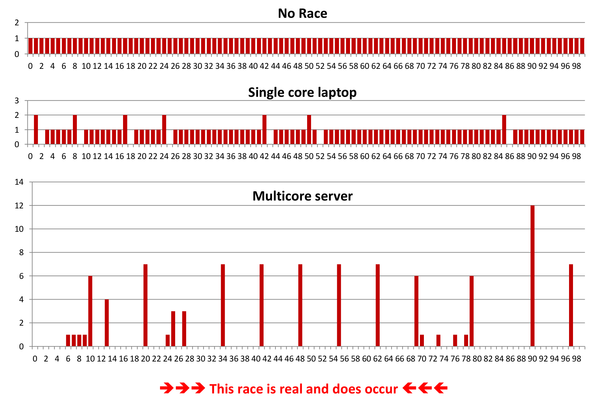
이 경쟁은 실제로 일어납니다. 그래프의 막대 높이는 PDF 안의 벡터 도형에서 직접 읽은 값입니다.
| 환경 | 나타난 값의 수 | 두 번 이상 나온 값 | 한 번도 안 나온 값 |
|---|---|---|---|
| 경쟁 없음 | 100 | 없음 | 없음 |
| 단일 코어 노트북 | 92 | 1, 8, 17, 24, 42, 50, 85 (각 2번) | 0, 2, 9, 18, 25, 43, 52, 86 |
| 멀티코어 서버 | 23 | 90 (12번), 20 · 34 · 41 · 48 · 55 · 62 · 97 (각 7번), 10 · 69 · 79 (각 6번), 13 (4번), 25 · 27 (각 3번) | 0–5를 비롯한 77개 |
- 단일 코어에서는 92가지 값이 나와 멀티코어보다 훨씬 고르게 퍼졌고, 빠진 값과 두 번 나온 값이 0 → 1, 2 → 8, 9 → 17, 18 → 24, 25 → 42, 43 → 50, 52 → 85, 86 → …처럼 번갈아 나타납니다.
i는 커지기만 하므로 각 스레드는 자기 번호 이상의 값만 읽을 수 있고, 따라서 빠진 값은 그 번호의 스레드가 더 늦은 값을 읽었다는 흔적입니다. 예컨대 0은 아무도 읽지 않았고 1은 두 번 나왔는데, 1 이하의 값을 읽을 수 있는 스레드는 0번과 1번뿐이므로 0번 스레드가 1을 읽은 것입니다. 다만 그래프만으로는 나머지 구간에서 어느 스레드가 어느 값을 읽었는지까지는 알 수 없습니다. 구간의 스레드들이 모두 하나씩 밀려 읽었을 수도 있고, 몇몇 스레드만 훨씬 늦게 읽었을 수도 있습니다. - 멀티코어에서는 경쟁이 훨씬 심합니다. 메인 스레드가 자기 코어에서 쉬지 않고 루프를 돌며
i를 올리는 동안 피어 스레드들이 다른 코어에서 조금씩 늦게 시작해 값을 읽으므로, 여러 스레드가 같은 값에 몰린 것으로 보입니다. 100개 스레드가 돌려준 값 가운데 그래프의 0–99에 든 것은 23가지뿐입니다.
막대 높이를 모두 더하면 경쟁 없음은 100이지만 단일 코어 노트북은 99, 멀티코어 서버는 98입니다. 가로축은 0–99뿐인데 메인 스레드의 루프가 끝나면 i는 100이 되므로, 루프가 끝난 뒤에야 값을 읽은 스레드는 축 밖의 100을 돌려줍니다. 모자란 1개와 2개는 이렇게 100을 읽은 스레드로 보는 것이 자연스럽습니다. 이 글을 쓰며 같은 코드(돌려준 값을 pthread_join으로 모으도록 보탠 것)를 macOS(Apple M4, 10코어)에서 여섯 번 돌려 보았을 때도, 매번 경쟁이 일어나 0–99 가운데 2–18개의 값이 빠졌고 매번 스레드 하나가 100을 돌려주었습니다. 다만 이것은 한 기계에서의 관찰일 뿐이며, 경쟁의 결과는 실행할 때마다, 기계마다 달라집니다.
3.8 스레드 기반 서버의 문제들 (Issues With Thread-Based Servers)
- 메모리 누수를 막으려면 “분리(detached)” 상태로 실행해야 합니다.
- 스레드는 어느 시점에든 조인 가능(joinable)하거나 분리된(detached) 상태, 둘 중 하나입니다.
- 조인 가능한 스레드는 다른 스레드가 수확하고 없앨 수 있습니다.
- 메모리 자원을 풀려면 (
pthread_join으로) 반드시 수확해야 합니다.
- 메모리 자원을 풀려면 (
- 분리된 스레드는 다른 스레드가 수확할 수 없습니다. 슬라이드는 원래 문장 “Detached thread cannot be reaped
or killedby other threads”의 “or killed”(또는 없앨 수)에 취소선을 그어 두었습니다.- 자원은 스레드가 끝날 때 자동으로 수확됩니다.
- 기본 상태는 조인 가능입니다.
- 분리하려면
pthread_detach(pthread_self())를 씁니다.
- 분리하려면
- 의도하지 않은 공유를 피하도록 조심해야 합니다.
- 예: 메인 스레드의 스택을 가리키는 포인터를 넘기는 것.
pthread_create(&tid, NULL, thread, (void *)&client_fd);
- 예: 메인 스레드의 스택을 가리키는 포인터를 넘기는 것.
- 스레드가 부르는 모든 함수는 스레드 안전(thread-safe)해야 합니다.
- 다음 강의에서 다룹니다(Stay tuned).
슬라이드의 항목을 하나씩 풀어 보겠습니다.
- 분리해야 하는 이유: 서버의 피어 스레드는 아무도 기다리지 않습니다. 메인 스레드는
accept루프를 도느라 바쁘고, 언제 어느 스레드가 끝날지도 모릅니다. 이런 스레드를 기본 상태인 조인 가능으로 두면, 끝난 뒤에도 자원이 회수되지 않고 쌓입니다(아래 경고). 13강 5.4절에서 수확하지 않은 자식 프로세스가 좀비로 남던 것과 같은 구조입니다. - 취소선의 의미: 분리 여부는 스레드가 끝났을 때 그 자원을 누가 회수하느냐, 즉 다른 스레드가
pthread_join으로 회수하느냐 시스템이 자동으로 회수하느냐만 정합니다(man 3 pthread_detach). 분리된 스레드도pthread_cancel로 취소를 요청받을 수 있고, 프로세스가exit으로 끝나면 함께 끝납니다. 그러니 분리된 스레드를 “없앨 수 없다”는 말은 틀렸고, 슬라이드가 그 부분을 지운 것으로 보입니다. - 분리하는 다른 방법: 메인 스레드가
pthread_create뒤에pthread_detach(tid)를 부르거나, 처음부터 분리된 상태로 만들도록 스레드 속성을 설정(pthread_attr_setdetachstate)할 수도 있습니다. 한 번 분리한 스레드는 다시 조인 가능으로 돌릴 수 없고 join할 수도 없습니다(man 3 pthread_detach). - 의도하지 않은 공유: 3.5절의
&client_fd가 그 예입니다. - 스레드 안전: 여러 스레드가 동시에 불러도 올바르게 동작하는 함수를 스레드 안전하다고 합니다. 무엇이 함수를 스레드 안전하지 않게 만드는지는 단원의 Part III인 21강에서 다룹니다.
조인 가능한 스레드가 끝났는데 아무도 pthread_join하지 않으면, 그 스레드는 “좀비 스레드”로 남아 시스템 자원을 계속 차지합니다. 리눅스 매뉴얼(man 3 pthread_join)은 이런 좀비 스레드가 충분히 쌓이면 더는 새 스레드(나 프로세스)를 만들 수 없게 된다고 경고합니다. 클라이언트를 끝없이 받는 서버라면 연결 하나마다 좀비 스레드가 하나씩 늘어나므로, 언젠가는 pthread_create가 실패합니다. 그래서 3.3.2절의 run_thread는 시작하자마자 스스로를 분리합니다.
3.9 스레드 기반 설계의 장단점 (Pros and Cons of Thread-Based Designs)
- + 스레드 사이에 자료 구조를 공유하기 쉽습니다.
- 예: 로그 정보, 파일 캐시
- + 스레드는 프로세스보다 (조금) 더 효율적입니다.
- − 의도하지 않은 공유가 미묘하고 재현하기 어려운 오류를 낳을 수 있습니다!
- 데이터를 쉽게 공유할 수 있다는 점이 스레드의 가장 큰 강점이자 가장 큰 약점입니다!
- 어떤 데이터가 공유되고 어떤 데이터가 사적인지 알기 어렵습니다.
- 테스트로 찾아내기 어렵습니다.
- 나쁜 경쟁 결과가 나올 확률은 매우 낮습니다.
- 하지만 0은 아닙니다!
19강 4.6절의 프로세스 기반 설계의 장단점과 나란히 놓으면, 두 방식이 같은 성질의 양면이라는 것이 드러납니다.
| 프로세스 기반 (19강 4.6절) | 스레드 기반 | |
|---|---|---|
| 여러 연결의 동시 처리 | 가능 | 가능 |
| 공유 | 디스크립터와 전역 변수는 공유하지 않고 열린 파일 테이블만 공유하는 깔끔한 모델. 대신 데이터를 나누려면 IPC가 필요합니다 | 주소 공간 전체를 공유하므로 로그나 파일 캐시를 그냥 함께 씁니다. 대신 어디까지가 공유인지 놓치기 쉽습니다 |
| 비용 | 프로세스 제어의 추가 부담 | (조금) 더 효율적 |
- 로그 정보, 파일 캐시: 예를 들어 웹 서버가 자주 요청되는 파일을 메모리에 캐시해 둔다면, 스레드 기반 서버에서는 모든 스레드가 그 캐시 하나를 함께 씁니다. 프로세스 기반 서버라면 프로세스마다 따로 캐시를 두거나 공유 메모리를 따로 마련해야 합니다.
- “확률은 매우 낮지만 0은 아니다”: 3.7절의 실험은 스레드를 쉬지 않고 연달아 만들어 경쟁이 잘 드러나게 한 경우입니다. 실제 서버에서는 연결이 그렇게 빽빽하게 들어오지 않으므로, 3.5절과 같은 버그가 있어도 대부분의 실행에서는 아무 일도 일어나지 않다가 드물게만 드러날 수 있습니다. 테스트를 여러 번 통과했다는 사실이 경쟁이 없다는 증거가 되지 못하는 이유입니다.
4. 스레드로 하는 병렬 계산 (Parallel Computing with Threads)
구분 슬라이드에는 2장의 구분 슬라이드에 실렸던 다중 스레드 그림이 윗부분만 조금 잘린 채 다시 실려 있습니다. 3장의 스레드가 여러 클라이언트를 동시에 응대하기 위한 것(동시성)이었다면, 이 장의 스레드는 한 계산을 여러 코어에 나누어 더 빨리 끝내기 위한 것(병렬성)입니다. 예제는 19강 1.2–1.3절에서 데이터 병렬성의 예로 본 벡터 덧셈 \(C = A + B\)입니다.
4.1 벡터 덧셈: 단일 스레드 (Vector Addition – Single Threaded)
세 버전(singlethreaded.c, multiplethreaded.c, openmp.c)이 함께 쓰는 자료 구조가 vector_add.h에 있습니다.
struct vdata {
int *A, *B, *C;
int N, threads;
};단일 스레드 버전 singlethreaded.c의 vadd는 다음과 같습니다.
long long vadd(void *param)
{
struct vdata *p = (struct vdata*)param;
assert(p);
int *A = p->A;
int *B = p->B;
int *C = p->C;
int N = p->N;
assert(A && B && C);
long long sum = 0;
for (int i=0; i<N; i++) {
C[i] = A[i] + B[i];
sum += C[i];
}
return sum;
}vadd는 길이N인 두 배열을 더해C에 쓰면서,C의 원소들의 합sum을 함께 구해 돌려줍니다.int원소를 많이 더해도 넘치지 않도록 합은long long으로 셉니다.struct vdata의threads는 이 함수에서는 쓰이지 않고, 4.2절에서 스레드 수로 쓰입니다.vadd가struct vdata의 주소를void *param하나로 받는 것은 세 버전(4.1–4.3절)의 원형을 똑같이 맞춘 것으로 보입니다.
4.2 벡터 덧셈: Pthreads (Vector Addition – Pthreads)
슬라이드(multiplethreaded.c)는 오른쪽 상자에 스레드 루틴 vadd_compute를, 왼쪽에 스레드를 만들고 결과를 모으는 vadd를 보여 줍니다. 아래에서는 컴파일되는 순서대로 vadd_compute를 먼저 적었고, 슬라이드에 정의가 없는 struct thread_param은 코드가 쓰는 필드를 보고 짐작해 채웠습니다.
/* 슬라이드에 없는 정의: 코드가 쓰는 필드에서 짐작한 것 */
struct thread_param {
int *A, *B, *C;
int from, to;
long long result;
};
void* vadd_compute(void *param)
{
struct thread_param *p = (struct thread_param *)param;
assert(p);
int *A = p->A;
int *B = p->B;
int *C = p->C;
int from = p->from;
int to = p->to;
assert(A && B && C);
long long sum = 0;
for (int i=from; i<to; i++) {
C[i] = A[i] + B[i];
sum += C[i];
}
p->result = sum;
return NULL;
}long long vadd(void *param)
{
struct vdata *p = (struct vdata*)param;
int N = p->N;
int nt = p->threads;
pthread_t tid[nt];
struct thread_param tparam[nt];
// compute size of one work chunk
int size = (N + nt-1) / nt;
int pos = 0;
// create and run threads
for (int t=0; t<nt; t++) {
tparam[t].A = p->A;
tparam[t].B = p->B;
tparam[t].C = p->C;
tparam[t].from = pos;
tparam[t].to = t == nt-1 ? N : pos + size;
pthread_create(&tid[t], NULL,
vadd_compute, &tparam[t]);
pos = tparam[t].to;
}
// wait for all threads to terminate
long long res = 0;
for (int t=0; t<nt; t++) {
pthread_join(tid[t], NULL);
res += tparam[t].result;
}
return res;
}$ gcc -o … -lpthreadvadd는 19강 1.3절의 연속 분할, 즉 배열을 이어진 덩어리(chunk)로 잘라 스레드마다 하나씩 맡기는 방식을 그대로 코드로 옮긴 것입니다.
| 단계 | 코드 | 하는 일 |
|---|---|---|
| ① 덩어리 크기 | size = (N + nt-1) / nt |
덩어리 하나의 크기를 \(\lceil N / \mathit{nt} \rceil\)로 잡습니다 |
| ② 구간 배정 | from = pos, to = … |
스레드 t는 구간 \([\mathit{from}, \mathit{to})\)를 맡고, 마지막 스레드는 N까지 맡습니다 |
| ③ 생성 | pthread_create(&tid[t], NULL, vadd_compute, &tparam[t]) |
스레드마다 자기 몫의 tparam 원소 주소를 넘깁니다 |
| ④ 계산 | vadd_compute |
자기 구간의 C를 채우고, 그 구간의 부분합을 p->result에 적습니다 |
| ⑤ 대기와 합산 | pthread_join, res += tparam[t].result |
모든 스레드를 기다린 뒤 부분합들을 더해 돌려줍니다 |
①의 식은 정수 나눗셈으로 올림을 구하는 흔한 방법입니다. \(N \ge 0\)이고 \(\mathit{nt} \ge 1\)이면 C의 정수 나눗셈 /는 내림 \(\lfloor \cdot \rfloor\)과 같으므로, \(N\)을 \(\mathit{nt}\)로 나눈 몫을 \(q\), 나머지를 \(r\)이라 하면(\(N = q\,\mathit{nt} + r\), \(0 \le r < \mathit{nt}\)),
\[ \begin{aligned} \left\lfloor \frac{N + \mathit{nt} - 1}{\mathit{nt}} \right\rfloor &= q + \left\lfloor \frac{r + \mathit{nt} - 1}{\mathit{nt}} \right\rfloor \\ &= \begin{cases} q, & r = 0 \\ q + 1, & 1 \le r \le \mathit{nt} - 1 \end{cases} \\ &= \left\lceil \frac{N}{\mathit{nt}} \right\rceil \end{aligned} \]
입니다. \(r = 0\)이면 \(r + \mathit{nt} - 1 = \mathit{nt} - 1 < \mathit{nt}\)이고, \(1 \le r \le \mathit{nt} - 1\)이면 \(\mathit{nt} \le r + \mathit{nt} - 1 < 2\,\mathit{nt}\)이기 때문입니다. 나머지가 있으면 덩어리를 하나 크게 잡아, 덩어리 \(\mathit{nt}\)개로 원소 \(N\)개를 빠짐없이 덮습니다.
3.5절은 메인 스레드 스택을 가리키는 포인터를 넘기다 경쟁이 생긴 예였는데, 이 코드도 vadd의 지역 배열 원소 &tparam[t], 즉 메인 스레드 스택의 주소를 넘깁니다. 그래도 문제가 없는 데는 두 가지 이유가 있습니다. 첫째, 스레드마다 서로 다른 원소를 받고, 메인 스레드는 원소를 채워 넘긴 뒤 그 원소를 고쳐 쓰지 않습니다. 둘째, vadd는 모든 스레드를 pthread_join으로 기다린 뒤에야 돌아오므로, 스레드들이 일하는 동안 tparam 배열이 든 스택 프레임이 사라지지 않습니다. 결과를 돌려받는 쪽도 마찬가지여서, 각 스레드는 자기 원소의 result와 자기 구간의 C에만 쓰고, 메인 스레드는 join이 끝난 원소의 result만 읽으므로 두 스레드가 같은 칸을 동시에 고쳐 쓰는 일이 없습니다.
덩어리 크기를 올림으로 잡았기 때문에, 마지막 스레드에 이르기 전에 pos + size가 N을 넘을 수 있습니다. 그런데 슬라이드의 코드는 마지막 스레드(t == nt-1)에서만 to를 N으로 자릅니다. 예를 들어 \(N = 5\), \(\mathit{nt} = 4\)이면 size가 2이므로 네 구간이 \([0, 2)\), \([2, 4)\), \([4, 6)\), \([6, 5)\)가 되어, 세 번째 스레드가 존재하지 않는 원소 A[5]와 B[5]를 읽고 C[5]에 씁니다. 네 번째 스레드는 from > to라 아무 일도 하지 않습니다. 이 글을 쓰며 macOS에서 돌려 보았을 때는 범위 밖에서 읽은 값의 합이 마침 0이어서 결과가 맞게 나왔는데, 겉보기 결과가 맞으니 더 알아차리기 어렵습니다. 몫 \(q\)가 \(\mathit{nt} - 1\) 이상, 즉 \(N \ge \mathit{nt}(\mathit{nt} - 1)\)이면 이 일은 생기지 않으므로 \(N\)이 스레드 수보다 훨씬 큰 보통의 쓰임에서는 드러나지 않지만, 마지막이 아닌 스레드의 to도 pos + size와 N 가운데 작은 값으로 잡으면 어떤 \(N\)에서도 안전합니다.
4.3 벡터 덧셈: OpenMP (Vector Addition – OpenMP)
같은 계산을 OpenMP로 쓰려면(openmp.c) 4.1절의 단일 스레드 코드에 한 줄만 더하면 됩니다.
long long vadd(void *param)
{
struct vdata *p = (struct vdata*)param;
assert(p);
int *A = p->A;
int *B = p->B;
int *C = p->C;
int N = p->N;
assert(A && B && C);
long long sum = 0;
#pragma omp parallel for shared(A, B, C) reduction (+:sum)
for (int i=0; i<N; i++) {
C[i] = A[i] + B[i];
sum += C[i];
}
return sum;
}$ gcc -o … -fopenmp슬라이드는 코드 옆에 두 가지를 적어 둡니다.
- 컴파일러가 이 코드를 Pthreads 기반 코드로 다시 씁니다.
- 스레드 수는 설정할 수 있습니다(기본값은 코어 수).
빨갛게 강조된 지시문의 각 부분은 다음과 같은 뜻입니다.
| 부분 | 뜻 |
|---|---|
#pragma omp parallel for |
바로 다음 for 루프의 반복들을 여러 스레드가 나누어 실행합니다 |
shared(A, B, C) |
포인터 변수 A, B, C를 모든 스레드가 공유합니다. 즉 모든 스레드가 같은 배열을 가리킵니다 |
reduction (+:sum) |
스레드마다 0에서 시작하는 자기만의 sum 사본에 더해 가다가, 루프가 끝나면 사본들을 +로 합쳐 원래의 sum에 더합니다 |
4.2절에서 손으로 한 일과 하나씩 맞대어 보면, 이 한 줄이 무엇을 대신하는지가 보입니다.
| 4.2절 Pthreads에서 손으로 한 일 | 4.3절 OpenMP에서 |
|---|---|
덩어리 크기를 계산해 스레드마다 [from, to) 구간을 배정 |
parallel for가 루프의 반복들을 스레드에 나누어 줌 |
pthread_create로 스레드 nt개를 만듦 |
컴파일러와 런타임이 스레드를 만듦. 개수는 설정할 수 있고 기본값은 코어 수 |
각 스레드가 부분합을 tparam[t].result에 적음 |
reduction이 스레드마다 sum의 사본을 둠 |
pthread_join으로 기다린 뒤 부분합을 더함 |
병렬 구간이 끝날 때 사본들을 더해 sum에 반영함 |
reduction이 꼭 필요한 이유:sum은 루프 밖에서 선언되었으므로,reduction없이 그냥 두면 모든 스레드가 하나의sum을 함께 고쳐 씁니다. 그러면 여러 스레드의sum += C[i]가 서로 겹쳐 일부 덧셈이 사라지는, 3장과 같은 종류의 경쟁이 생깁니다. 이런 갱신이 왜 깨지는지는 21강에서 다룹니다.- 스레드 수 설정: 슬라이드가 말한 “설정”은 흔히 환경 변수
OMP_NUM_THREADS로 합니다. - OpenMP를 쓰지 않고 컴파일하면: 지시문은 무시되고 같은 코드가 한 스레드로 돌며 결과도 같습니다. 이 글을 쓰며 써 본 macOS의 기본 clang은
-fopenmp를 지원하지 않아(unsupported option '-fopenmp') 옵션 없이 컴파일했는데, 경고 없이 지시문을 무시하고 순차적으로 실행했습니다.
5. 모듈 요약 (Module Summary)
구분 슬라이드에는 “Summary”라고 적힌 문서 모양의 아이콘만 있고, 다음 한 장이 지금까지 본 동시성 구현 방식들을 정리합니다.
5.1 동시성을 얻는 방법들 (Approaches to Concurrency)
프로세스 (Processes)
- 자원을 공유하기 어렵습니다. 그만큼 의도하지 않은 공유를 피하기 쉽습니다.
- 클라이언트를 더하고 빼는 데 드는 부담이 큽니다.
스레드 (Threads)
- 자원을 공유하기 쉽습니다. 어쩌면 지나치게 쉽습니다.
- 부담은 중간입니다.
- 스케줄링 정책을 거의 통제할 수 없습니다.
- 디버깅이 어렵습니다.
- 사건이 일어나는 순서가 실행마다 되풀이되지 않습니다.
I/O 다중화 (I/O Multiplexing)
- 교재에서 다루지만, 이 강의에서는 다루지 않습니다.
세 방식을 표로 모으면 다음과 같습니다.
| 방식 | 공유 | 부담 | 그 밖에 |
|---|---|---|---|
| 프로세스 | 어렵다 → 의도하지 않은 공유를 피하기 쉽다 | 클라이언트를 더하고 빼는 부담이 크다 (fork, 수확) |
— |
| 스레드 | 쉽다 → 어쩌면 지나치게 쉽다 | 중간 | 스케줄링을 통제하기 어렵고, 실행 순서가 재현되지 않아 디버깅이 어렵다 |
| I/O 다중화 | — | — | 교재에서 다루며, 이 강의에서는 다루지 않는다 |
- 공유의 양면: 프로세스와 스레드의 첫 항목은 같은 성질의 양면입니다. 1.4절에서 보았듯 스레드는 각자의 레지스터와 스택을 빼면 코드 · 데이터 · 커널 문맥을 모두 함께 쓰고, 프로세스는 열린 파일 테이블 같은 예외를 빼면 기본적으로 함께 쓰는 것이 없으므로, 한쪽의 장점이 곧 다른 쪽의 단점입니다.
- 스케줄링을 통제하기 어렵다: 어느 스레드가 언제 실행될지는 커널 스케줄러가 정하므로, 프로그램이 클라이언트를 처리하는 순서를 직접 정할 수 없습니다. 반면 19강 3.1절의 I/O 다중화에서는 프로그래머가 여러 논리 흐름을 직접 번갈아 실행하므로 그 순서를 쥐고 있습니다.
- 순서가 재현되지 않는다: 3.7절의 실험처럼 같은 프로그램도 실행할 때마다 다르게 번갈아 실행되므로, 경쟁으로 생긴 버그는 다시 일으키기조차 어렵습니다.
- I/O 다중화: 교재(Computer Systems: A Programmer’s Perspective)의 12장이 프로세스(12.1절), 스레드(12.3절)와 함께 12.2절에서 다루는 방식으로, 이 과목에서는 19강 3.1절에서 소개만 하고 넘어갑니다.
정리하며 (Closing Remarks)
이번 강의의 논증 사슬을 단계별로 압축하면 다음과 같습니다.
| 단계 | 내용 | 근거 |
|---|---|---|
| ① 프로세스 다시 나누기 | 프로세스는 프로그램 문맥 · 커널 문맥 · 주소 공간의 묶음이지만, 실행 흐름(레지스터와 스택)과 그 흐름이 쓰는 코드 · 데이터 · 커널 문맥으로 다시 나눌 수 있다 | Process: Traditional View, Single Thread View |
| ② 다중 스레드 프로세스 | 스레드마다 프로그램 문맥과 스택만 따로 두고, 코드 · 데이터 · 커널 문맥은 모든 스레드가 함께 쓴다 | Process: Multi-Threaded View, Threads vs Processes |
| ③ 리눅스의 태스크 | 스레드는 프로세스 안의 활동 단위이며, 리눅스 커널은 프로세스와 스레드를 구분하지 않고 태스크로 스케줄한다 | Threads vs Processes |
| ④ 닮은 점과 다른 점 | 둘 다 자기 논리적 제어 흐름을 갖고 동시에 실행되며 커널이 문맥 교환하지만, 스레드는 코드와 데이터를 공유하고 생성 · 수확 · 문맥 교환이 더 싸며, 트리가 아니라 대등한 동료들의 풀을 이룬다 | Threads vs Processes |
| ⑤ 실행 | 단일 코어는 시분할로 동시성을 흉내 내고, 멀티코어는 코어 수까지의 스레드를 실제로 동시에 실행할 수 있다 | Thread Execution |
| ⑥ Pthreads API | pthread_create · pthread_exit · pthread_cancel · pthread_join · pthread_self로 스레드를 다루고, 뮤텍스와 조건 변수로 동기화할 수 있으며, 대부분의 함수는 오류를 errno가 아닌 반환값으로 알린다 |
Common Threading Libraries, Pthread Management API, man 7 pthreads |
| ⑦ hello, world | 메인 스레드가 return이나 exit으로 끝나면 피어 스레드도 끝나므로, 피어 스레드를 pthread_join으로 기다린 뒤에 끝낸다 |
The Pthreads “hello, world” Program, Execution of Threaded “hello, world” |
| ⑧ 스레드 기반 echo 서버 | 연결마다 스레드를 만들고, 스레드는 스스로 분리한 뒤 연결 디스크립터를 다 쓰고 닫으며, 디스크립터 테이블을 공유하므로 메인 스레드는 그것을 닫지 않는다 | Review: Iterative / Process-Based Concurrent Echo Server, Thread-Based Concurrent Echo Server, Threaded Execution Model |
| ⑨ malloc의 이유 | 메인 스레드 스택의 client_fd 주소를 넘기면 다음 accept가 그 값을 덮어써 두 스레드가 같은 연결을 처리할 수 있으므로, 연결마다 새로 할당한 공간에 담아 넘기고 피어 스레드가 해제한다 |
Why the Trouble with Malloc/Free? |
| ⑩ 경쟁은 실제로 일어난다 | &i를 넘겨받은 스레드 100개가 돌려준 값은 0–99 가운데 단일 코어 노트북에서 92가지, 멀티코어 서버에서 23가지뿐이었다 |
Does this race occur?, Experimental Results |
| ⑪ 분리와 공유 | 기본 상태인 조인 가능 스레드는 수확하지 않으면 자원이 새므로 분리해야 하고, 의도하지 않은 공유를 피해야 하며, 스레드가 부르는 함수는 스레드 안전해야 한다 | Issues With Thread-Based Servers |
| ⑫ 장단점 | 공유가 쉽다는 것이 스레드의 가장 큰 강점이자 약점이며, 나쁜 경쟁 결과는 확률이 매우 낮아도 0이 아니어서 테스트로 잡아내기 어렵다 | Pros and Cons of Thread-Based Designs |
| ⑬ 병렬 계산 | 벡터 덧셈을 \(\lceil N / \mathit{nt} \rceil\) 크기의 덩어리로 나누어 스레드마다 부분합을 구하고 join 뒤에 합치며(슬라이드의 코드는 \(N\)이 스레드 수에 비해 작으면 배열 끝을 넘을 수 있다), OpenMP는 parallel for와 reduction으로 같은 일을 컴파일러에 맡긴다 |
Vector Addition – Single Threaded, Pthreads, OpenMP |
| ⑭ 세 가지 방식 | 프로세스는 공유가 어렵고 부담이 크며, 스레드는 공유가 쉽고 부담이 중간이지만 스케줄을 통제하기 어렵고 디버깅이 어려우며, I/O 다중화는 교재에 맡긴다 | Approaches to Concurrency |